Formação em rede: professores em movimento
Entre 27 de outubro e 24 de novembro, a Secretaria Municipal de Educação de Guaxupé realizou um ciclo de formações voltado aos professores dos anos iniciais do Ensino Fundamental, reafirmando o compromisso com a formação continuada e com o fortalecimento das práticas pedagógicas na rede municipal.
Matematizar é preciso – e pode ser divertido
As oficinas de Matemática foram conduzidas pelas especialistas e coordenadoras pedagógicas da própria rede, em parceria com a coordenação do Ensino Fundamental da Secretaria Municipal de Educação. Ao longo de 10 horas de formação, os encontros foram marcados por momentos de estudo, troca de experiências, elaboração de propostas pedagógicas e preparação de materiais didáticos e recursos pensados para apoiar o ensino da Matemática em sala de aula.
Conteúdos em foco
As atividades abordaram frações, números e operações, figuras planas e resolução de problemas, sempre com foco em estratégias que favorecem a aprendizagem significativa e o protagonismo dos estudantes. O ciclo também promoveu espaços de reflexão coletiva, fortalecendo o trabalho colaborativo entre professores e escolas.
Paralelamente, em parceria com o Sistema Aprende Brasil, foram realizadas formações específicas nas áreas de Educação Física, Língua Inglesa e Tecnologia Educativa, com temáticas voltadas ao aprimoramento das práticas pedagógicas e à ampliação do repertório docente.
Onde e quando aconteceram
Os encontros aconteceram nas E.M. Delfim Moreira e E.M. Coronel, no período das 17h45 às 19h45, e os professores participantes receberão certificado pela participação na formação. Com essa programação, a Secretaria Municipal de Educação de Guaxupé consolidou mais uma ação formativa que fortalece a colaboração em rede e incentiva práticas pedagógicas que inspiram o ensino e a aprendizagem nos primeiros anos do Ensino Fundamental.
Momentos da formação em rede

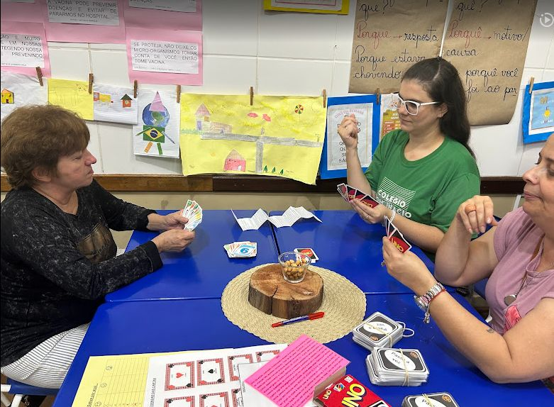
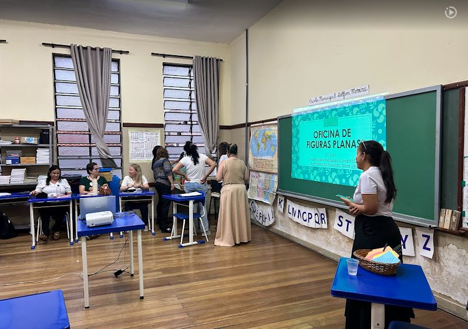
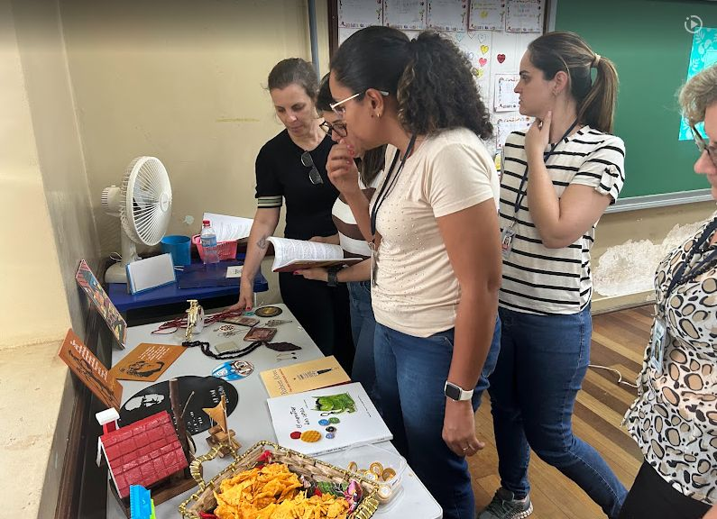
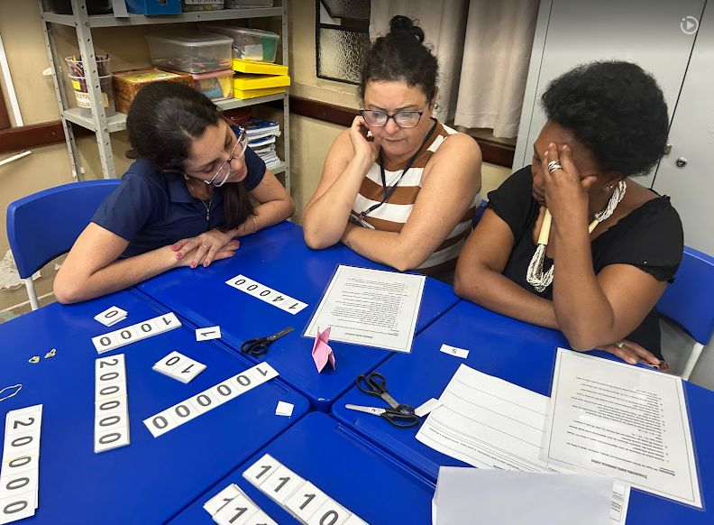
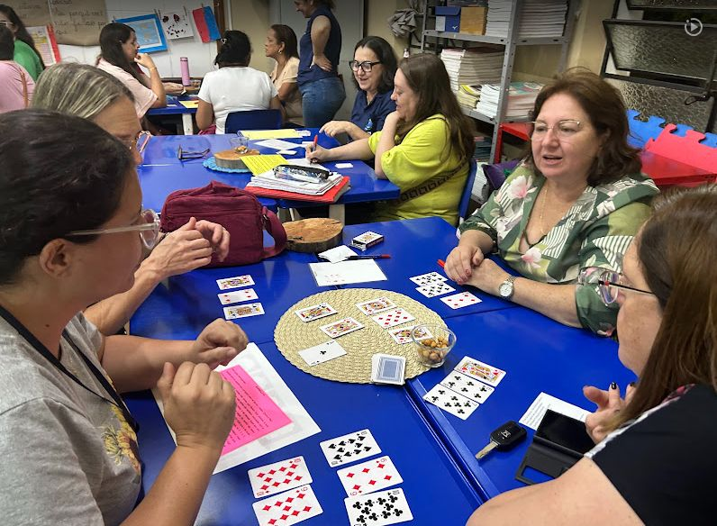

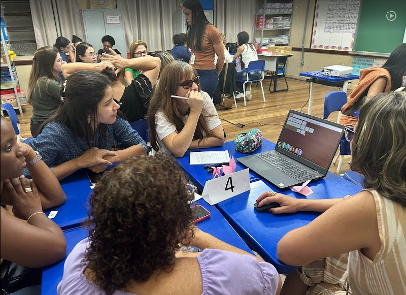
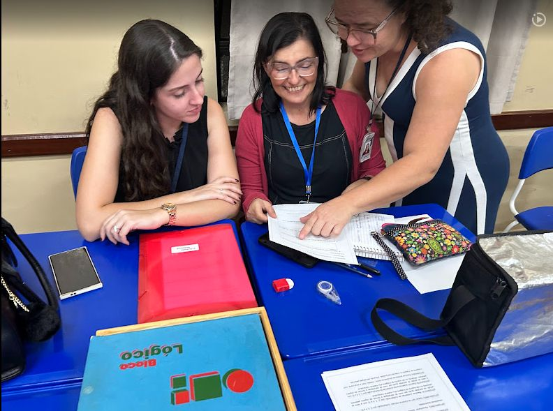
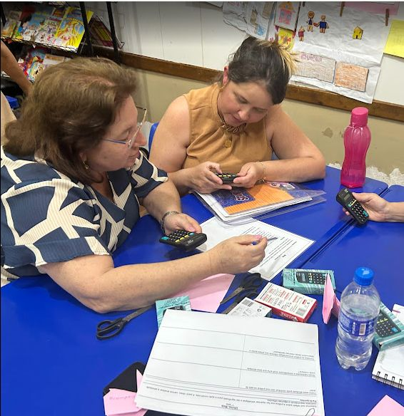
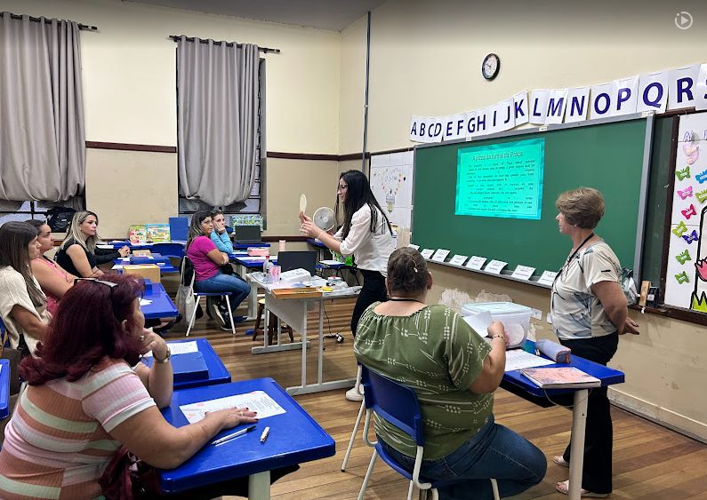
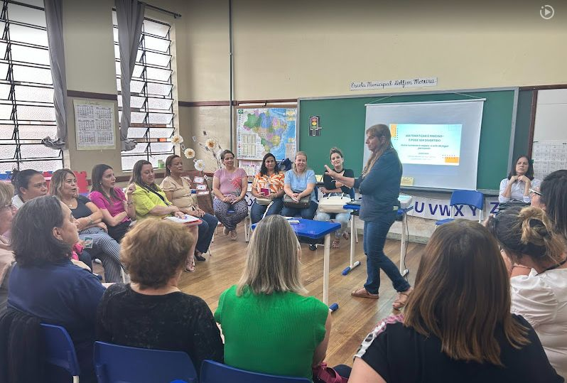
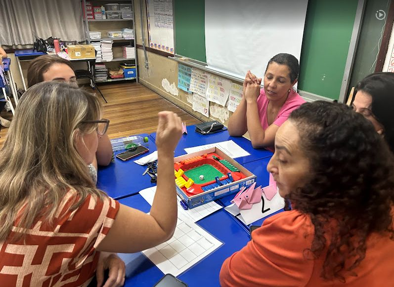
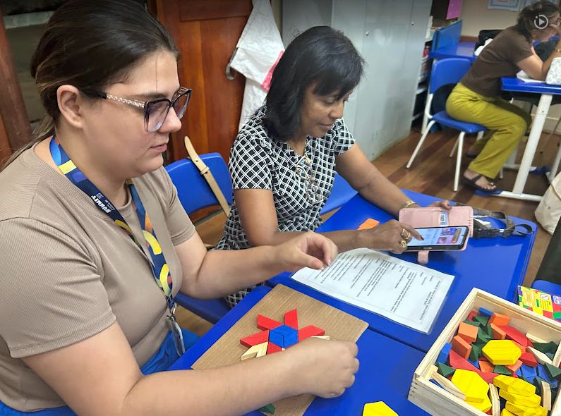
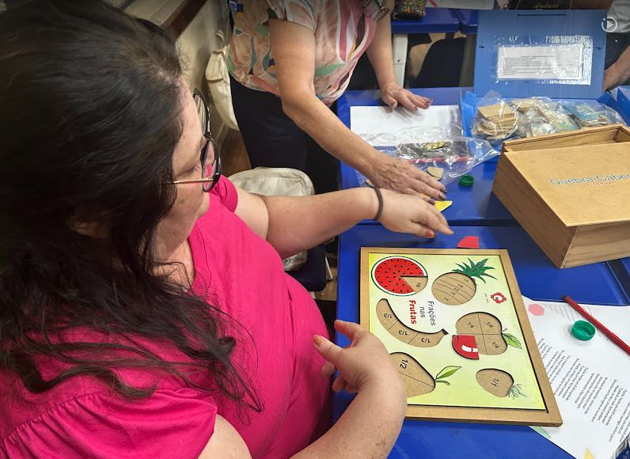
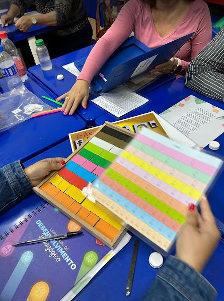